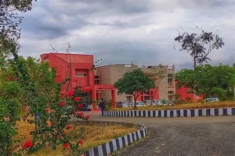

About Our College

Government College of Engineering and Technology (GCET), Jammu was established by the Government of Jammu and Kashmir in 1993 with the approval of the All India Council for Technical Education (AICTE) and is affiliated with the University of Jammu. It was created with the vision of providing valuable resources for industry and society through excellence in technical education and research. The campus is spread over 869 kanals of land at Jammu, approximately 22 km from Jammu city.
GCET Jammu has become the first institution in the Union Territory of Jammu & Kashmir to have all five of its undergraduate programs accredited by the National Board of Accreditation (NBA). The Institute has also been conferred Autonomous Status vide UGC Communication No. F.2-10/2023(AC-Policy) dated 03.10.2024, effective from the Academic Session 2024-25.
The Institute is recognized by the University Grants Commission under Sections 2(f) and 12(b) of the UGC Act, 1956. It has well-designed state-of-the-art infrastructure with highly equipped laboratories across various departments.
The Institute offers Undergraduate (B.Tech.) degree programmes in five disciplines, namely Electronics & Communication Engineering, Electrical Engineering, Computer Science & Engineering, Mechanical Engineering and Civil Engineering, with an intake capacity of 60 students in each discipline. It also offers Postgraduate (M.Tech.) programmes in Computer Science & Engineering, Electronics & Communication Engineering and Mechanical Engineering.
In addition, the Institute offers a Lateral Entry Scheme in B.Tech. 3rd Semester with 10% of the sanctioned intake capacity, supernumerary to the approved intake in each engineering discipline.
Aside from imparting quality education to students of the Union Territories of Jammu & Kashmir and Ladakh, the Institute actively provides consultancy services to various Government and Semi-Government agencies such as PMGSY, CPWD, PDD, MES, PWD, ERA, Central University, IRCON, Konkan Railways and JDA. The Institute has also benefited from the Technical Education Quality Improvement Programme (TEQIP-III), a World Bank-aided initiative of the Ministry of Education, Government of India, aimed at enhancing the quality of technical education.
The Training & Placement Cell adopts a proactive approach to prepare students according to the evolving requirements of the job market. Alumni of the Institute have excelled in diverse domains and are well placed across the globe in multinational corporations, Government departments, public sector undertakings and private organizations, bringing laurels to the Institute.
Since 2017, the Institute has been conducting an Induction Programme for newly admitted students as a regular feature to enhance creativity, build confidence, improve time management skills and cultivate leadership and interpersonal abilities.
Over the past thirty-two years, the Institute has consistently served as an inspiration for aspiring engineers, guiding them to reshape their mindsets and develop ecosystems that foster innovation and entrepreneurship. Furthermore, the Institute has effectively addressed practical challenges encountered by stakeholders across diverse engineering disciplines.
Our Vision
To establish Government College of Engineering and Technology (GCET), Jammu as a leading centre of excellence in technical education, research, innovation, entrepreneurship, and professional development by providing a dynamic, inclusive, and industry-oriented learning environment. The institution envisions nurturing technically competent, creative, ethical, and socially responsible engineers who possess strong problem-solving abilities, leadership qualities, and a commitment to lifelong learning.
GCET Jammu aims to continuously enhance the quality of education through modern teaching methodologies, advanced laboratories, emerging technologies, interdisciplinary learning, research, and strong collaboration with industries, government organizations, academic institutions, and other stakeholders. The institution strives to create an ecosystem that encourages innovation, entrepreneurship, critical thinking, and the practical application of engineering knowledge to address real-world challenges.
Through excellence in teaching, research, consultancy, skill development, and community engagement, GCET Jammu envisions contributing significantly to the technological and socio-economic development of Jammu & Kashmir, the nation, and the global community. The institution seeks to empower students to become capable professionals and responsible citizens who can adapt to rapidly changing technological and industrial environments and contribute towards sustainable development and nation building.
Our Mission
1. To provide quality technical education through modern teaching methodologies, well-equipped laboratories, practical learning, and a curriculum aligned with emerging technologies and the evolving needs of industry and society.
2. To nurture innovation, creativity, and entrepreneurship by creating an environment that encourages students and faculty to develop innovative ideas, undertake research, build solutions to real-world problems, and transform knowledge into meaningful applications.
3. To promote research and technological advancement through interdisciplinary projects, consultancy, collaborations, and partnerships with industries, government organizations, research institutions, and academic institutions at national and international levels.
4. To develop skilled and industry-ready professionals by strengthening technical knowledge, practical skills, communication abilities, leadership qualities, teamwork, problem-solving capabilities, and lifelong learning among students.
5. To foster ethical and socially responsible citizens by promoting professional integrity, human values, environmental awareness, inclusiveness, and a strong sense of responsibility towards society and the nation.
6. To strengthen industry–academia interaction through internships, training programmes, expert lectures, industrial visits, collaborative projects, consultancy services, and placement-oriented initiatives that provide students with meaningful exposure to professional environments.
7. To support sustainable development and community welfare by applying engineering knowledge and technological solutions to address practical challenges faced by communities, industries, government agencies, and other stakeholders.
8. To continuously improve institutional excellence through academic autonomy, quality assurance, faculty development, modern infrastructure, digital transformation, effective governance, and active participation of students, faculty, alumni, and stakeholders.
9. To create a culture of lifelong learning and adaptability that enables graduates to successfully respond to rapidly changing technological, industrial, economic, and societal requirements.
10. To contribute to nation building by producing competent engineers, researchers, innovators, entrepreneurs, and responsible professionals who contribute to the technological, economic, and social development of Jammu & Kashmir and the nation.